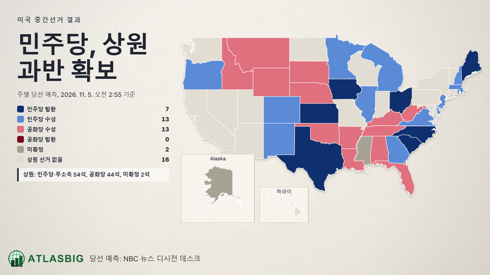
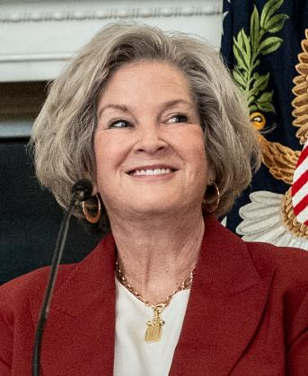
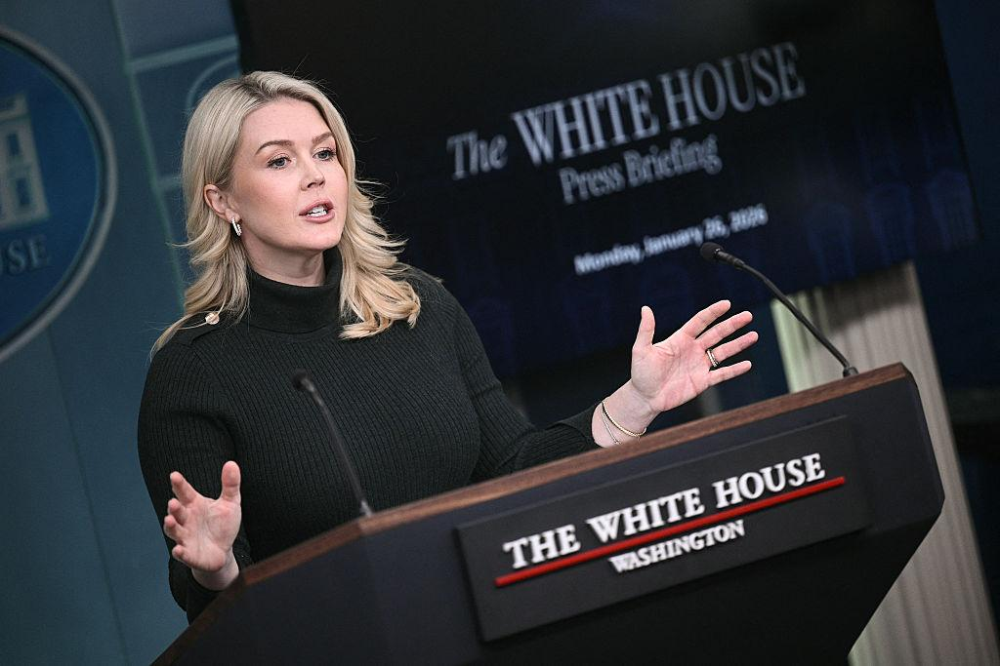
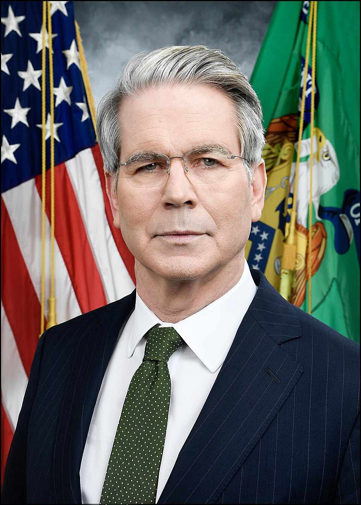

믿을 수 없는, 대공황 이래 역사상 최대 대패라고 해도 좋을 정도로 박살 난 트럼프와 공화당
그리고 선거 패배(가 확실시 되어가고 있는) 전후, 어쩌면 당연하다고 할 수 있는 정부 요인들의 대탈주가 이어지고 있다.
1. 백악관 핵심 참모들의 연쇄 이탈
1-1. 수지 와일스 | 백악관 비서실장

트럼프의 최측근이자 백악관 운영을 총괄하던 인물. 중간선거 참패 직후 퇴임이 발표됐으며, 강경파 스티븐 밀러가 후임으로 지명됨.
1-2. 캐롤라인 래빗 | 백악관 대변인

트럼프 행정부의 대표적인 언론 대응 인사. 중간선거를 약 두 달 앞두고 백악관을 떠남.
그리고 언론에 나와서 슬슬 트럼프 까는 중. 고점에서 익절했다고 할 수 있겠다.
그 외에도 짜잘한 건을 보자면......
|
이름 |
직책 |
상황 |
|---|---|---|
|
하밋 딜런 |
법무부 민권국장 |
11월 5일 사임 |
|
존 아이젠버그 |
법무부 국가안보국장 |
11월 6일 사임 |
|
제이슨 레딩 키뇨네스 |
플로리다 남부 연방검사장 |
11월 6일 사임 |
|
헨리 휘터커 |
법무장관 고문 |
11월 초 사임 예정 공개 |
|
인물 |
당시 직책 |
|---|---|
|
제임스 블레어 |
백악관 부비서실장 |
|
제임스 브레이드 |
백악관 의회협력국장 |
|
데이비드 워링턴 |
백악관 법률고문 |
|
애비게일 잭슨 |
백악관 부대변인 |
|
앤디 베이커 |
국가안보 부보좌관 |
|
에밀리 언더우드 |
스티븐 밀러 측근 참모 |
뭐, 너무 많아서 다 적기도 힘들다. 대충 진짜 오질라게 탈주하고 있다고 보면 된다.
2. 중간선거 전후 공개 반발
토머스 매시 공화당 하원의원 : 헤그세스 국방장관 탄핵 추진. 이란전쟁의 의회 승인 문제 등을 제기.
JD 밴스 부통령 : 이란전쟁을 공화당 선거 패배의 핵심 원인으로 지목. 전쟁 종료와 대이스라엘 관계 재검토 요구.
테드 크루즈 공화당 상원의원 : 선거 결과를 워터게이트급 심판이라고 표현. 관세와 장기화한 이란전쟁을 비판.
터커 칼슨 보수 언론인(부연 설명하자면, 이 사람은 이쪽 업계 사실상 원탑 수준의 영향력을 갖고 있다고 보면 된다) : 중간선거 결과를 두고 트럼프 시대가 끝났다고 선언.
이것도 너무 많아서 적기도 힘들다.
- 알렉스 존스: 트럼프의 정신적 판단 능력을 거론하며 퇴진 요구.
- 캔디스 오언스: 트럼프의 이란전쟁 정책을 강력 비난.
- 조 로건: 트럼프의 이란전쟁 결정이 선거 공약에 어긋난다고 비판.
- 랜드 폴: 공화당 상원의원으로서 이란 공격에 반대.
- 워런 데이비슨: 공화당 하원의원으로서 이란 군사작전 반대.
역시 존나게 많이 욕하고 있다고 보면 된다. 그것도 공화당 내부에서.
3. 집단적인 트럼프 거리 두기
경합지역의 공화당 상·하원 후보 62명 가운데 41명이 사실상 트럼프를 손절하고, 트럼프 정부 다른 입장을 취하거나 선거운동에서 트럼프와의 연관성을 축소했다고 한다.
->인기 없는 대통령을 여당 후보들이 선거 포스터에서 빼버리는 초식. 사실 이건 한국에서도 흔한 일이다.
4. 결론을 내자면
2026년 9월 30일. 그러니까 선거 패배가 다가오고 있는 시점 기준,
트럼프 행정부 백악관 최고위 참모진인 'A팀'의 누적 교체율이 무려 56%다.
선거 패배 이후는 아직 통계가 안 잡혔는데, 내년쯤 통계가 나오면 교체율이 얼마에 달할지 상상도 안 간다. 70%? 80%? 더 될 수도 있다.
결과적으로 선거 이후에는 '그나마' 제정신이 박혀 있던 사람들은 싸그리 탈주하고 있고,
빈 자리는 더 YES맨이고 더 강경파인 사람들로 채워지는 상황.
이미 2028년에 공화당의 멸망이 확실시 되어가고 있는 시점에서, 남은 2년을 별 일 없이 보낼 수 있을지 공화당 내부는 물론이고 미국 내에서도 심각하게 우려하고 있다.
특히....

트럼프 행정부의 정말 정말 최후의 보루라고 할 수 있는 이 아저씨가 사임하면 주식시장이 어떻게 될지 상상도 안 간다.
투자자들은 스콧 베센트 장관이 침몰하는 타이타닉에서 마지막까지 자리를 지켜 주기를 기도할 수밖에 없다.
이 아저씨는 사임안하지않았니